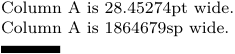
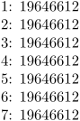
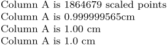
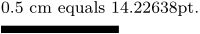
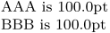
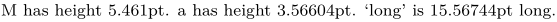

| NOTE: This article is about the data type. For the names of a page's many dimensions, see Layout parameters and dimensions. |
A dimension, in TeX, is a variable storing a length. The length is entered
as a number immediately followed by two letters that indicate the unit, e.g.
12pt or 1cm. TeX and MetaPost recognize 9 different units:
- scaled points ( sp ), equal to 1/65536 points. This is TeX’s internal unit for dimensions. One sp is so small that TeX can store dimensions as integers; at the time, this was an advantage, because floating point arithmetic was not guaranteed to be consistent across platforms, and precision is still floating, while integer arithmetics are predictable.
- points ( pt ) and picas ( pc ). One point is 1/72.27 inch; 12 points = 1 pica.
- didot ( dd ) and cicero ( cc ). The didot is a continental counterpart of the point; 12 didot = 1 cicero.
- big points ( bp ), also known as DTP point, defined by Adobe as 1/72 of an inch. Basic unit of MetaPost.
- millimeters ( mm ), centimeters ( cm ), and inches ( in ).
The various conversions between the units are laid out in the conversion table at the end of this article.
Contents
Defining and accessing dimensions
\newdimen is the native TeX method to initialise a dimension variable. The requirement to explicitly initialize your dimension variables is a bit clunky, but this method should still be preferred over storing dimensions as strings.
- \newdimen is by far the more common idiom
- Values stored in a dimension register with \newdimen can be accessed directly from Lua, which is not true for values stored in a macro with \def or \definemeasure .
The following example shows how to set and access dimensions:
-
\newdimen\columnA % initialise variable \columnA=10mm % set variable Column A is \the\columnA{} wide. % lengths are automatically % displayed in pt. Column A is \number\columnA sp wide. % internally, lengths are stored % as an integer number of sp \blackrule[width=\columnA]
- 
Defining and accessing dimensions in Lua
How to rewrite TeX code
\the\dimexpr\availablehsize\relax %say, 426pt
Mostly LMTX:
-
1: \number\dimexpr\availablehsize\relax 2: \startluacode token.set_macro(tex.ctxcatcodes,"temp","\\scratchdimen\\availablehsize") token.expand_macro("temp") context(tex.getdimen("scratchdimen")) \stopluacode 3: \startluacode token.set_macro(tex.ctxcatcodes,"temp","\\scratchdimen\\availablehsize") tex.runlocal("temp") context(tex.getdimen("scratchdimen")) \stopluacode 4: \startluacode tex.print("\\scratchdimen\\availablehsize") tex.pushlocal() tex.poplocal() context(tex.getdimen("scratchdimen")) \stopluacode 5: \startluacode tex.print("\\dimensiondef\\temp\\availablehsize") tex.pushlocal() tex.poplocal() context(tex.getdimensionvalue("temp")) \stopluacode \def\calculateavailablehsize{\dimensiondef\temp\availablehsize} 6: \startluacode token.expand_macro("calculateavailablehsize") context(tex.getdimensionvalue("temp")) \stopluacode \newtoks\tcalculateavailablehsize \tcalculateavailablehsize{\dimensiondef\temp\availablehsize} 7: \startluacode -- mkiv tex.runtoks("tcalculateavailablehsize") context(tex.getdimensionvalue("temp")) \stopluacode
- 
Converting dimensions
Usually, you will want to express a dimension in something other than points or scaled points. For this, Lua is the way to go:
-
If you want to print, the functions
number.tocentimeters,topoints,topicas, etc. are already provided. These functions return a number as a string with (by default) the unit abbreviation appended.
-
If you want to calculate, the conversion factors from standard points are stored in
number.dimenfactors. For example,65536 * number.dimenfactors["pt"]returns1.
-
\newdimen\columnA % initialise variable \columnA=10mm % set variable \startluacode local A = tex.dimen.columnA -- access a dimen value -- internal unit: scaled points (integer) context("Column A is %d scaled points", A) context.par() -- default conversion: 15 digits, unit at the end, no space context("Column A is %s", number.tocentimeters(A)) context.par() -- expressing a dimen in cm, rounded to 0.01, no automatic unit context("Column A is %s cm", number.tocentimeters(A, "%.2f")) context.par() -- converting from mm to cm local inmm = 10 local incm = inmm / number.dimenfactors["mm"] * number.dimenfactors["cm"] context("Column A is %.1f cm", incm) \stopluacode
- 
Calculating with dimensions
From TeX, you can compute with dimensions by writing your calculation between \dimexpr...\relax. Such an expression may only occur where a length is expected. Spaces are allowed, but never required.
-
\newdimen\columnA \columnA=1cm 0.5 cm equals \the\dimexpr \columnA / 2 \relax. \blackrule[width=\dimexpr 2 \columnA\relax]
- 
In Lua, dimensions are a number of scaled points, and you can do all the usual things. TeX uses integers for dimens, but Lua treats them as floats; the number will only be coerced to integer when you retrieve from, or assign to, tex.dimen.somevalue. Not that half a scaled point is much to worry about.
-
\newdimen\columnA \columnA=1cm \startluacode local A = tex.dimen.columnA double_A = 2 * A context.blackrule({width = double_A .. "sp"}) \stopluacode
- More examples
-
\newdimen\AAA \AAA=100pt \newdimen\BBB \BBB=\AAA AAA is \the\AAA BBB is \the\BBB
- 
Storing dimensions as strings
Because TeX expands macros, we can store a dimension string like 10pt
in a macro, and insert that in any place TeX expects a dimension. You can use a plain \def; or you can define dimensions with \definemeasure[...] and retrieve them with \measure{...}.
-
\definemeasure[One][10mm] \def\Two{20mm} \definemeasure[Three][\dimexpr \measure{One} + \Two\relax] \blackrule[width=\measure{One}] \crlf \blackrule[width=\Two] \crlf \blackrule[width=\measure{Three}]\crlf
Get the height or width of some text
-
\definemeasure[Mheight][\heightofstring{M}] \definemeasure[aheight][\heightofstring{a}] \definemeasure[long][\widthofstring{long}] M has height \measure{Mheight}. a has height \measure{aheight}. \quote{long} is \measure{long} long.
- 
Conversion table
Bold numbers indicate conversions that are set by definition.
| unit | TeX name | in sp | in pt | in pc | in dd | in cc | in bp | in in | in mm | in cm |
|---|---|---|---|---|---|---|---|---|---|---|
| scaled point | sp
|
1 | 1/65536 | |||||||
| point | pt
|
65536 | 1 | 1/12 | 0.9346 | 0.0779 | 0.9963 | 1/72.27 | 0.3516 | 0.0351 |
| pica | pc
|
786432 | 12 | 1 | 11.2149 | 0.9346 | 11.9552 | 0.1660 | 4.2175 | 0.4218 |
| didot | dd
|
70124.081 | 1.0700 | 0.0892 | 1 | 1/12 | 1.0660 | 0.0148 | 0.3761 | 0.0376 |
| cicero | cc
|
841488.98 | 12.8401 | 1.0700 | 12 | 1 | 12.7921 | 0.1777 | 4.5128 | 0.45128 |
| big point | bp
|
65781.76 | 1.0038 | 0.0836 | 0.9381 | 0.0782 | 1 | 1/72 | 0.3528 | 0.0353 |
| inch | in
|
4736286.7 | 72.27 | 6.0225 | 67.5415 | 5.6284 | 72 | 1 | 25.4 | 2.54 |
| millimeter | mm
|
186467.98 | 2.8453 | 0.2371 | 2.6591 | 0.2216 | 2.8346 | 0.0394 | 1 | 0.1 |
| centimeter | cm
|
1864679.8 | 28.4528 | 2.3711 | 26.5911 | 2.2159 | 28.3464 | 0.39370 | 10 | 1 |